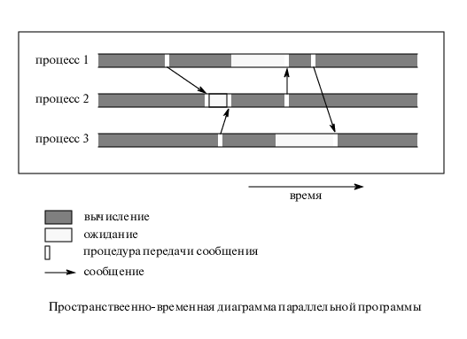

Визуализация процесса параллелизации
Существуют визуализационные средства для отладки и оценки параллелизации программ. Результат может быть представлен на пространственно-временной
диаграмме.

Визуализационные средства для PVM называются XPVM, а для MPI, как ни странно, XMPI (Upshot программа).
Служат для отладки, запуска и визуализации PVM и MPI программ. Эти средства распространяются бесплатно.
Смотри также раздел "Профилирование"


 [Назад]
[Оглавление]
[Вперед]
[Назад]
[Оглавление]
[Вперед]
Последнее обновление 21.11.2001 WebMaster